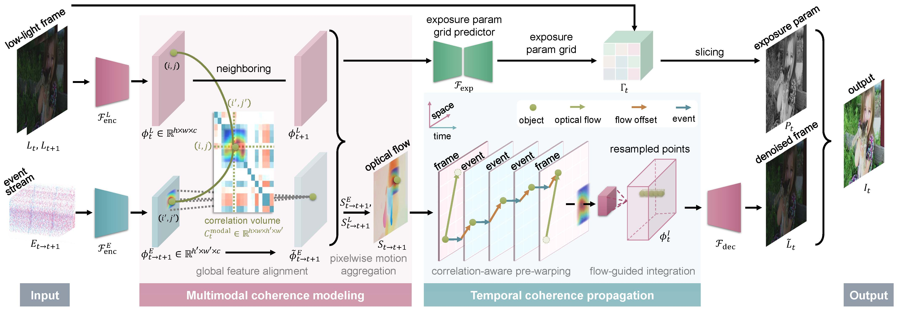

Method
An overview of the proposed method. All-pair correlation volumes between each pixel of events and frames are computed from their features by using the proposed multimodal coherence modeling module firstly, which enables the event features to be aligned and the optical flow to be jointly estimated. In the subsequent module of temporal coherence propagation, observations corresponding to the same scene point are sampled and propagated across time to estimate the underlying clean frame. Parallelly, exposure parameters are extracted from both events and frames to produce a high-quality frame.